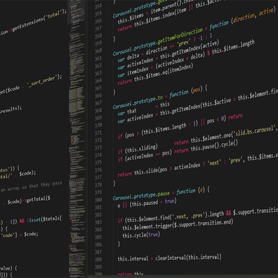

This program executes Collatz Conjecture, that any positive integer n will always reach 1 using the sequence: if the number is even, divide by 2, if the number is odd, multiply by 3 and add 1. This program will also tell the user how many steps it took to reach 1.
Hi, my name is Brendan,
This is my story.
I am making this website not only for a lab in my cis-137 class, but also as a portfolio/blog of my progress through computer science. This will eventually include my personaly projects, possible links to github, and just useful tips I learn throughout my education.

I started learning about programming in 2017. I wanted to be able to make a game much like runescape and league of legends. I never thought that I would take interest in much else besides games when it came to programming.
My very first course in programming was intro to java. I really liked the idea of learning java because Runescape was coded entirely in java. Once I started to get the hang of the basics, I took on a lot of personal projects.
After learning java basics, I am now enrolled in an intro to python course. I was fairly skeptical at first about taking to Python, and was more there just because it was a requirement. However, after learning some of the real-world uses I have become more open to the possibilities I can accomplish using Python.
| This is a table of some of my programs (all in java) that I've created. Unfortunately I didn't bother adding comments throughout because they're fairly simple programs. Please open on a desktop to Download the code. | ||
|---|---|---|
| Name of the Program | Description | |
| Collatz |
|
|
| Final Exam Calculator |
This is a very basic final exam grade calculator that is used to find what grade you need to earn on a final to achieve a specified percentage in the class. |
|
| Improved Final Exam Calculator |
This calculator does more than its predessesor. You first specify (yes or no) if you need a specific grade, and from there will input your current percent and the weight of the final. The calculator will show you what you need for a specific grade, or what percentages you need for an A, B, C, etc. |
|
| The Number Game |
This game is one of the first I've created in java and in python. The basis is that the computer "thinks" of a random number between 1 and 100, and you the user have to guess its value with only knowing if you were higher or lower than the generated number. There is also a highscore system in place. |
|
| Moment |
The next three programs were designed by me when I was still in Mechanical Engineering. This particular one is for finding the Moment of a system. |
|
| Resultant Force |
This program will calculate the resultant force between a specified number of forces as well as give the coordinate direction angles of the force. |
|
| Cross Product |
This final program will calculate the cross product between two vectors. |
|
| Note Cards |
I made this program to simulate note cards, unfortunately I could not figure out how to get part of it to work. I wanted to make it to where you could quiz yourself and the order of the keywords or definitions would be randomized, but other projects got in the way and I never finished. The reading aspect works however, and you can edit the text files. |
|